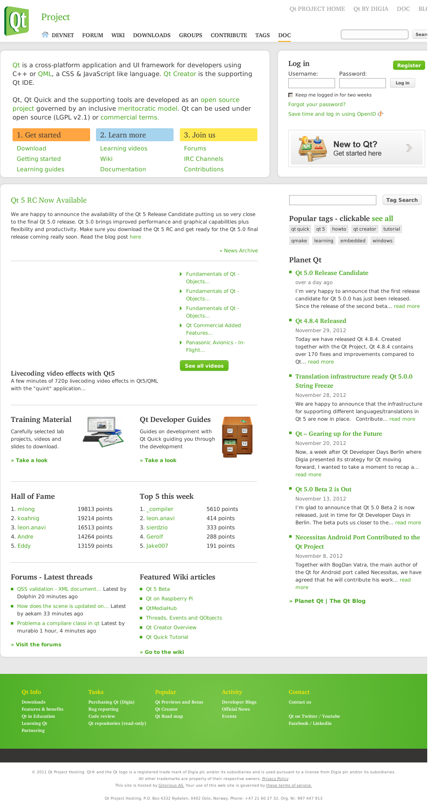

WebKit Frame Capture Example
The Frame Capture example shows how to use the WebKit browser engine to obtain images of frames in a Web page.
This example is designed to be run from the command-line. Run the example with a URL and the output file name as arguments. The application captures the frame contents in a PNG image with the file name your specified.
The following output image is generated by the application, if you pass the URL, www.qt-project.org.

Files: